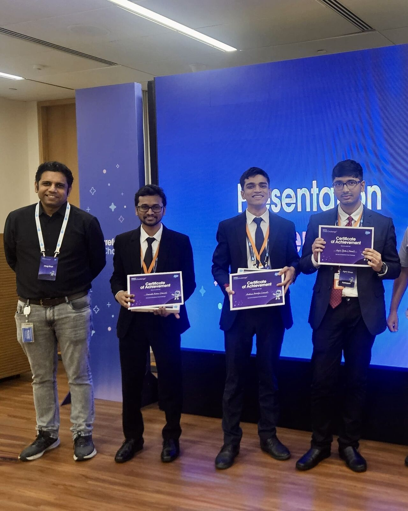
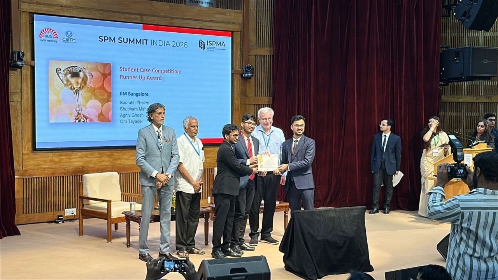
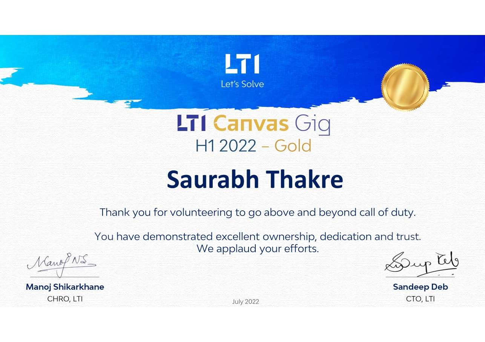
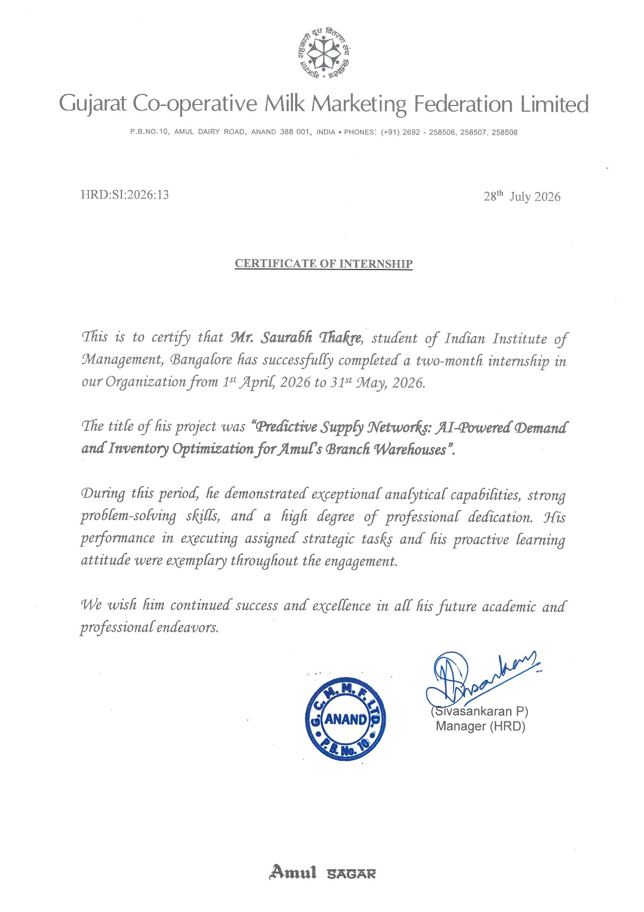

Hi, I’m
Saurabh Thakre. I’m interested in building AI and enterprise products that make complex workflows easier to navigate. At IIM Bangalore, I’m combining nearly four years in enterprise technology with hands-on product discovery and prototyping.
THE PATH SO FAR IIM Bangalore PGP in Business Analytics Amul / GCMMF Product Management Intern LTIMindtree Nearly four years in enterprise technology
01 / SELECTED WORK
Different problems.Same product curiosity. Three perspectives on making complex decisions clearer. Explore the problem, the choices and the prototype.
02 / THE 2026 LAB
Curiosity, in progress. More experiments in AI, data and product journeys. Coursework and shared foundations are identified.
[ ? ]
AI EVALUATION · COURSEWORK · FORK
SEBI Compliance AI Source retrieval and a 50-question benchmark to explore answer quality, grounding and failure cases.
Explore repository ↗ ⌘
CONVERSATIONAL AI · SHARED STARTER
Midterm A course workspace for configuring a source-based chatbot, previewing conversations and submitting it for evaluation.
Explore repository ↗ ↗
MARKETPLACE JOURNEYS · UI PROTOTYPE
InternCasa Student readiness, discovery and applications alongside an organization’s applicant-review journey. Uses sample data.
Explore repository ↗ 03 / AWARDS & EXPERIENCE
Ideas put to the test. Team achievements, company recognition and a product management internship.

View photo ↗ NATIONAL WINNER · 2025
Salesforce Futureforce Team Marvel from IIM Bangalore won the national finale with an Agentforce concept for patient engagement.
Team: Agniv Ghosh, Shubham Mahajan & Saurabh Thakre.
View the award post ↗ 
View photo ↗ NATIONAL RUNNER-UP · 2026
ISPMA Product At SPM Summit 2026, Team Marvel explored how product thinking could address delays and rejections in cashless health insurance claims.
Team: Shubham Mahajan, Agniv Ghosh, Om Tayade & Saurabh Thakre. Photo from Om’s team post.
View the team post ↗ 
View certificate ↗ LTI · H1 2022 GOLD AWARD
Canvas Gig recognition Recognized for ownership, dedication and going beyond the call of duty through Canvas Gig assignments.
VR Experience Theatre: a Unity and C# solution for the Oracle Business Unit’s Centre of Excellence.AI-based Insurance Clause Library: identifying similar insurance clauses using Python and text similarity algorithms.View on LinkedIn ↗ 
View certificate ↗ AMUL / GCMMF · APR–MAY 2026
Product management internship Completed a two-month internship on “Predictive Supply Network: AI-Powered Demand and Inventory Optimization for Amul’s Branch Warehouses”.
Certificate issued 28 July 2026 by Gujarat Co-operative Milk Marketing Federation Ltd.
Explore the internship case study ↗ 04 / WORK EXPERIENCE
Technical roots.. From building websites to enterprise data governance and product discovery. Select + to explore each chapter.
APR–MAY 2026 Amul (GCMMF) Product Management Intern Anand, Gujarat · On-site — show or hide details Explored demand, inventory and dispatch decisions across Amul’s first-leg supply chain.
Ran discovery through plant and warehouse visits and conversations with dispatch, sales and planning teams. Authored a PRD and phased roadmap spanning demand forecasting, inventory allocation, dispatch planning and load optimization. Prototyped planning logic, tested demand scenarios and presented the concept and an AI feature roadmap to senior leadership. Evaluation targets: 90%+ truck fill and one-day dispatch latency.
Explore the internship case study ↗ JUL 2021–JUN 2025 LTIMindtree Enterprise data governance · Three-role progression Pune & Navi Mumbai — show or hide details Worked with data owners, stewards and platform teams on enterprise data-governance and catalog platforms.
Oct 2024–Jun 2025 Specialist – System Management Nov 2021–Oct 2024 Senior Consultant – System Management Jul–Nov 2021 Graduate Engineer Trainee Configured Informatica EDC, Alation and OvalEdge resources, connectors, data lineage and profiling. Translated stakeholder requirements into platform configuration, access controls and governance workflows. Built Python REST API integrations and operational automation; supported platform administration, installation and upgrades. View Canvas Gig Gold recognition ↗ MAY–JUL 2019 Somebuddy Technologies LLP Web Design Intern Nagpur, India — show or hide details Co-created the company website, somebuddy.in, using WordPress during my engineering studies.
Contributed to website design and implementation. Worked on search engine optimization for the website and its blogs. View experience on LinkedIn ↗ 05 / EDUCATION
A foundation to build on. Engineering, analytics and a growing product perspective. Select + for more details.
2025–2027 IIM Bangalore MBA · Business Analytics Expected graduation 2027 — show or hide details Master of Business Administration in Business Analytics at the Indian Institute of Management Bangalore.
Building a foundation across product management, strategy and analytics. Subject Representative for Communication in the Digital Age. Explore PM case competition awards ↗ 2017–2021 Shri Ramdeobaba College of Engineering and Management Bachelor of Engineering · Computer Science Nagpur, India — show or hide details Bachelor of Engineering in Computer Science.
Grade 8.48
College internship Web design at Somebuddy Technologies LLP, 2019 Explore the internship ↑ 06 / SKILLS
Skills shaped by building. Connecting product thinking, technical depth and clear communication.
01 Product discovery From the problem to a product decision.
Stakeholder interviews Requirements & PRDs Prioritization Roadmapping Success metrics 02 AI & prototyping Make ideas tangible, then examine the result.
AI-assisted prototyping RAG evaluation Conversational AI 03 Data & technology Understand the data and the systems around it.
Data governance Python REST APIs SQL Excel 04 Design & communication Shape the experience and communicate the thinking.
Figma PowerPoint Interactive prototyping Stakeholder communication